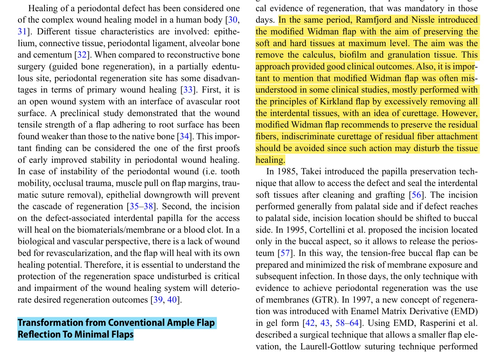

Evidencia científica – Colgajo de Widman Modificado
Artículo
Fundamental Concepts and New Perspectives
for Periodontal Regeneration
Current Oral Health Reports
Volume 12 • 2025
Fragmento utilizado como sustento clínico

"El fragmento resaltado explica que el Colgajo de Widman Modificado fue desarrollado para preservar al máximo los tejidos blandos y duros, permitiendo la eliminación del cálculo, biofilm y tejido de granulación. Además, recomienda preservar las fibras periodontales remanentes para favorecer una adecuada cicatrización."